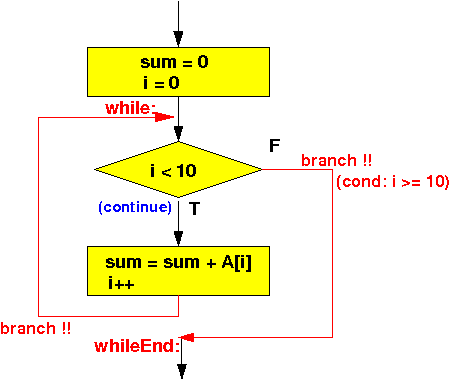
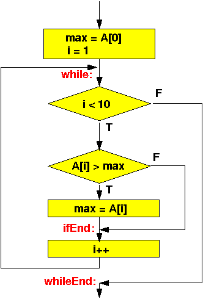

- The for statement
of the Java programming language
is nothing more than
a "dressed up"
while statement !!!
We can always re-write a for-statement into an equivalent program using a while-statement as follows:
for ( expr1; condition; expr2 ) <==> expr1; statements while ( condition ) { statements; expr2; }We already discussed how to convert a while-construct in assembler code....
- Example: sum the elements in an array
int A[10]; int sum, i; sum = 0; for (i = 0; i < 10; i++); sum = sum + A[i];We first convert the for-loop into an equivalent while-loop:
int A[10]; int sum, i; sum = 0; i = 0; while ( i < 10 ) { sum = sum + A[i]; i = i + 1; }The flow chart of the above program is:
 An ARM assembler program that implement the above loop construct is:
main: // sum = 0; - always execute the RHS first !!! mov r0, #0 // r0 = 0 - ready to save it movw r1, #:lower16:sum movt r1, #:upper16:sum // r1 = addr(sum) str r0, [r1] // sum = 0; // i = 0; mov r0, #0 // r0 = 0 - ready to save it // (not necessary, because r0 is already = 0...) movw r1, #:lower16:i movt r1, #:upper16:i // r1 = addr(i) str r0, [r1] // i = 0; while: // START of while loop // Test while condition i < 10 movw r0, #:lower16:i movt r0, #:upper16:i // r0 = addr(i) ldr r1, [r0] // r1 = i; cmp r1, #10 // Check: i < 10 bge whileEnd // If i >= 10: exit while loop /* *********************************** While body *********************************** */ // sum = sum + A[i] //// Get sum movw r0, #:lower16:sum movt r0, #:upper16:sum // r0 = addr(sum) ldr r2, [r0] // r2 = sum; //// Get A[i] (use base + offset access technique !) movw r0, #:lower16:A movt r0, #:upper16:A // r0 = addr(sum) --- Base address movw r1, #:lower16:i movt r1, #:upper16:i // r1 = addr(i) ldr r1, [r1] // r1 = i --- index add r1, r1, r1 // r1 = 2*i add r1, r1, r1 // r1 = 4*i --- Offset ! ldr r3, [r0,r1] // r3 = A[i] //// compute sum + A[i] add r2, r2, r3 // r2 = sum + A[i] //// Store result in sum (in memory) movw r0, #:lower16:sum movt r0, #:upper16:sum // r0 = addr(sum) str r2, [r0] // sum = sum + A[i] // i = i + 1 movw r0, #:lower16:i movt r0, #:upper16:i // r0 = addr(i) ldr r2, [r0] // r2 = i; add r2, r2, #1 // r2 = i + 1 str r2, [r0] // i = i + 1; // End of while body --- branch back to test !! b while whileEnd: /* -------------------------------------------------- Begin of the permanent program variables -------------------------------------------------- */ .data A: .4byte 4, 6, 7, 3, 8, 2, 9, 1, 5, 10 // int array (with 10 values) sum: .skip 4 i: .skip 4 .end
- Example Program:
(Demo above code)

- Prog file: /home/cs255001/demo/asm/7-while/for-sum-array.s
How to run the program:
- To compile: as255 for-sum-array
- To run: use EGTAPI
- When control structures as
nested, you simply need to
discover the
program flow control
created by the
nested control structure and
then
use the appropriate
labels and
branch instructions to
create the
same program flow
in assembler.
- Example: find the maximum
value in an array
int A[10]; int max, i; max = A[0]; for ( i = 1; i < 10; i++ ) { if ( A[i] > max ) max = A[i]; }Convert to while loop:
int A[10]; int max, i; max = A[0]; i = 1; while ( i < 10 ) { if ( A[i] > max ) max = A[i]; i++; }The flow chart of the above program is:
 ARM assembler program that implements (= realizes) this program control flow:
main: // max = A[0]; - always execute the RHS first !!! movw r0, #:lower16:A movt r0, #:upper16:A // r0 = addr(A) = addr(A[0]) ldr r0, [r0] // r0 = A[0]; - ready to save it movw r1, #:lower16:max movt r1, #:upper16:max // r1 = addr(max) str r0, [r1] // max = 0; // i = 1; mov r0, #1 // r0 = 1 - ready to save it movw r1, #:lower16:i movt r1, #:upper16:i // r1 = addr(i) str r0, [r1] // i = 1; while: // START of while loop // Test while condition i < 10 movw r0, #:lower16:i movt r0, #:upper16:i // r0 = addr(i) ldr r1, [r0] // r1 = i; cmp r1, #10 // Check: i < 10 bge whileEnd // If i >= 10: exit while loop /* *********************************** While body *********************************** */ // if ( A[i] > max ) //// Get A[i] (use base + offset access technique !) movw r0, #:lower16:A movt r0, #:upper16:A // r0 = addr(sum) --- Base address movw r1, #:lower16:i movt r1, #:upper16:i // r1 = addr(i) ldr r1, [r1] // r1 = i --- index add r1, r1, r1 // r1 = 2*i add r1, r1, r1 // r1 = 4*i --- Offset ! ldr r2, [r0,r1] // r2 = A[i] //// Get max movw r0, #:lower16:max movt r0, #:upper16:max // r0 = addr(max) ldr r3, [r0] // r3 = max; //// Compare A[i] (= r2) < max (= r3) cmp r2, r3 ble ifEnd /* ******************************** Then-part: max = A[i] Note: r0 = addr(max), r2 = A[i] ******************************** */ str r2, [r0] // max = A[i] ifEnd: // i = i + 1 movw r0, #:lower16:i movt r0, #:upper16:i // r0 = addr(i) ldr r2, [r0] // r2 = i; add r2, r2, #1 // r2 = i + 1 str r2, [r0] // i = i + 1; // End of while body --- branch back to test !! b while whileEnd: /* -------------------------------------------------- Begin of the permanent program variables -------------------------------------------------- */ .data A: .4byte 4, 6, 7, -3, 8, 2, -9, 1, 5, -10 max: .skip 4 i: .skip 4 .end
- Example Program:
(Demo above code)
- Prog file: /home/cs255001/demo/asm/7-while/for-max-array.s
How to run the program:
- To compile: as255 for-max-array
- To run: use EGTAPI